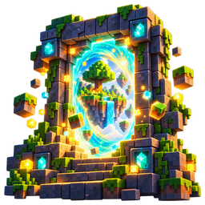

Политика конфиденциальности
Какие данные хранятся. Только если вы создаёте аккаунт Portalis: логин, ник, аватар и оформление профиля, статус, статистика игры в Portalis (минуты, сыгранные карты, достижения), список друзей и пати, сообщения в чатах и на стене, оценки карт, загруженные вами картинки и копии миров. При входе через Google Portalis получает от Google только адрес почты и имя (для создания логина и ника) — без доступа к другим данным аккаунта Google.
Где хранятся. На сервере Supabase (проект Portalis). Пароли хранятся только в виде хэша. Сообщения видят только их участники; профиль — друзья и игроки Portalis в пределах открытых полей.
Чего мы не делаем. Не продаём и не передаём данные третьим лицам, не показываем рекламу, не используем данные для обучения моделей и аналитики.
Без аккаунта программа работает полностью на вашем компьютере и ничего о вас не отправляет.
Удаление. Чтобы удалить аккаунт и все данные, напишите на f1xit1wot@gmail.com или создайте обращение на GitHub — удалим в течение 7 дней.
English
Обновлено: 5 октября 2026.
Portalis не связан с Mojang и Microsoft. Minecraft — товарный знак Mojang AB.